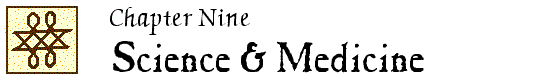

John Locke Chronology |
John Locke Manuscripts |
John Locke Resources |
John Locke Bibliography | ||

|
1648-1800 1801-1900 1901-1950 |
1951-1960 1961-1970 1971-1980 |
1981-1990 1991-2000 2001-2005 |
2006-2010 2011- |
 1961
1961
The medical writings of John Locke, 1632-1704 / Kenneth Dewhurst. – Thesis (D.Phil.)–Oxford University, 1961. – 2 vols. (ix, 288, 278 leaves)
Thesis version of Dewhurst, John Locke, physician and philosopher (1963)
Forces and fields : the concept of action at a distance in the history of physics / Mary B. Hesse. – London ; New York : T. Nelson, ©1961.
See “Locke on the mechanical philosophy” (p. 121-125); see also p. 166-168.
H&W 263; Y&Y 1961.15
New
A history of chemistry / by J. R. Partington. – London : Macmillan & Co. Ltd. ; New York : St Martin’s Press, 1961-1970.
See volume 2 (1961):470, 506, 556.
“Locke’s aphorisms on education and health.” – See entry in Chapter 4.
“Sydenham and Locke on the limits of anatomy” / David E. Wolfe. // IN: Bulletin of the history of medicine. – 35 (1961):193-220.
LNL 1:9; Y&Y 1961.30
1962
“Dr. Robert Pitt’s letters to John Locke” / by Kenneth Dewhurst. // IN: St. Bartholomew’s Hospital journal. – 66 (1962):258-267.
Prints letters from MS. Locke c. 17, ff. 162-196.
LNL 4:19; H&W 1983; Y&Y 1962.3; A [844]
“John Locke’s medical notes during his residence in Holland (1683-1689)” / by Kenneth Dewhurst. // IN: Janus. – 50 (1961-63):176-192.
H&W 264; Y&Y 1962.4; A [918]
“Locke’s contribution to Boyle’s researches on the air and on human blood” / by Kenneth Dewhurst. // IN: Notes and records of the Royal Society of London. – 17 (1962):198-206.
On Boyle, The general history of the air (1691) and Memoirs for the natural history of humane blood … (1684)
LNL 4:19; Y&Y 1962.5
“Post-mortem examination on case of rickets performed by John Locke” / by Kenneth Dewhurst. // IN: British medical journal. – 1962:vol. 2:1466.
Prints manuscript notes, 4 June 1666 [MS. Locke d. 9, p. 68]
LNL 4:19; Y&Y 1962.6; A [919]
“A review of John Locke’s research in social and preventive medicine” / Kenneth Dewhurst. // IN: Bulletin of the history of medicine. – 36 (1962):317-340.
Includes “Preliminary topicks or articles or enquiry in order to the history of diseases” [MS. Locke c.42, ff. 98-100]
H&W 264; Y&Y 1962.7; A [920]
“A seventeenth-century symposium on manic-depressive psychosis” / by Kenneth Dewhurst. // IN: British journal of medical psychology. – 35 (1962):113-125.
Includes opinions of various doctors from Locke’s correspondence and “Madnesse” [Journal, 5 & 11 Nov. 1677: MS. Locke f.2, p. 317-318, 348]
LNL 4:19; A [921]
“Some letters of Dr. Charles Goodall (1642-1712) to Locke, Sloane, and Sir Thomas Millington” / Kenneth Dewhurst. // IN: Journal of the history of medicine and allied sciences. – 17 (1962):487-508.
Prints letters from the Lovelace Collection.
LNL 4:19; Y&Y 1962.8; A [922]
“Some 17th-century veterinary notes from the journals of John Locke (1632-1704)” / by Kenneth Dewhurst. // IN: Veterinary record. – 74 (1962):996-999.
Prints notes from various journals and notebooks.
H&W 264; Y&Y 1962.9; A [923]
“Thomas Sydenham (1624-1689) : reformer of clinical medicine” / by Kenneth Dewhurst. // IN: Medical history. – 6 (1962):101-118.
“Scientific preconceptions in Locke’s philosophy of language.” – See entry in Chapter 3.
“John Locke’s Herbarium” / by J.W. Gough. // IN: Bodleian Library record. – 7 (1962-67):42-46.
H&W 264; Y&Y 1962.13
Reprinted in: A Locke miscellany … / edited by Jean S. Yolton (1990). – p. 161-165.
“Locke as a medical pragmatist” / Patrick Romanell. // IN: Ithaca : actes du Congrès international d’histoire des sciences. – 10 (1962):279-284.
H&W 265; Y&Y 1964.25 [sic]
1963
“Dr. William Cole’s (1635-1716) letters to John Locke” / by Kenneth Dewhurst. // IN: Centaurus. – 8 (1963):147-173.
Includes letters from MS. Locke c. 6, ff. 195-212.
H&W 264; Y&Y 1963.7; A [924]
John Locke (1632-1704), physician and philosopher : a medical biography : with an edition of the medical notes in his journals / by Kenneth Dewhurst. – London : Wellcome Historical Medical Library, 1963. – xii, 331 p. – (Publications of the Wellcome Historical Medical Library ; n.s., 2)
Based in part on an Oxford D.Phil. thesis entitled The medical writings of John Locke, 1632-1704 (1961)
Reviews: Anon., J.Hist.Med. 19 (1964):425-426; W. Bean, Arch.Int.Med. 115 (1965):257-260; C.E. Kellett, N. & Q. 210 (1965):159-160; P. Laslett, Br.Med.J. 1964:vol. 1:900; L.J. Rather, Bull.Hist.Med. 39 (1965):90-91; J. Stannard, Med.Hist. 8 (1964):295-296.
Y 345; H&W 264; Y&Y 1963.8; T 266; A [925]
Reprinted: New York : Garland, 1984. – (The philosophy of John Locke)
“An Oxford medical quartet : Sydenham, Willis, Locke, and Lower” / by Kenneth Dewhurst. // IN: British medical journal. – 1963:v.2:857-860.
Expanded version in: Oxford medicine : essays on the evolution of the Oxford Clinical School to commemorate the bicentenary of the Radcliffe Infirmary, 1770-1970 / edited by Kenneth Dewhurst. – Oxford : Sandford Publications, ©1970. – p. 23-30.
H&W 264; Y&Y 1963.9
“Prince Rupert as a scientist” / by Kenneth Dewhurst. // IN: British journal for the history of science. – 1 (1962-63):365-373.
Includes transcripts of three Locke manuscripts: “To make small shot …” [MS. Locke c. 42, f. 206] – An untitled medical receipt for “Prince Ruperts oyntment for a Burne or Scald” from Lady Chichley, with notes initialed JL [MS. Locke d. 9, p. 17] &ndsah; “Prince Rupert’s Ointment” [MS. Locke d. 9, p. 320]
“A seventeenth-century dream interpreted” / Kenneth Dewhurst. // IN: Journal of nervous and mental disease. – 136 (1963):594-596.
A dream of Mary Popple, wife of William Popple, about Locke.
H&W 264; H&W 1983; Y&Y 1963.10; A [845]
“The treatment of syphilis in the seventeenth century : a case reported by John Locke” / by Kenneth Dewhurst. // IN: The practitioner. – 190 (1963):397-402.
Includes extracts from Locke’s journal for 1678 [MS. Locke f. 3, p. 125-160]
H&W 264; Y&Y 1963.11; A [926]
“Materia medica in the Locke-Clarke correspondence” / Jerry Stannard. // IN: Bulletin of the history of medicine. – 37 (1963):201-225.
LNL 1:8; Y&Y 1963.27
1964
“Willis in Oxford : some new MSS.” / Kenneth Dewhurst. // IN: Proceedings of the Royal Society of Medicine. – (Commemoration of the septecentenary of Merton College, Oxford). – 57 (1964):682-687.
Describes Locke’s notes on Willis’s lectures [MS. Locke f. 19]; see also Dewhurst, Thomas Willis’s Oxford lectures (1980)
“John Locke, physician and book collector.” – See entry in Chapter 11.
“John Locke, physician-philosopher” / William S. Keezer. // IN: Texas state journal of medicine. – 60 (1964):379-386.
“John Locke, physician and book collector.” – See entry in Chapter 11.
“The significance of Locke’s De arte medica” / Patrick Romanell. // IN: Memorias del XIII Congresso Internacional de Filosoféa. – 13 (1964):v. 7:127-133.
H&W 265; Y&Y 1964.26
Spanish translation: “La significación del fragmento De arte medica de Locke” / Patrick Romanell. // IN: Humanitas (Nuevo León, México). – 5 (1964):109-116.
“Some medico-philosophical excerpts from the Mellon Collection of Locke papers” / by Patrick Romanell. // IN: Journal of the history of ideas. – 25 (1964):107-116.
Contains transcriptions of the following manuscript pieces: “Rosicrucians 79,” “Thurneisserus 79,” “Auditus,” and “Morbus 82.”
See also the comment by Odegard, “Locke’s epistemology and the value of experience” (1965)
Abstract: BullSig 19:126.
H&W 265; Y&Y 1964.27; T 322; A [927]
“Locke and Sydenham” / L.G.S. // IN: Journal of the history of medicine. – 19 (1964):421.
Notice of Romanell, “Some medico-philosophical excerpts …” (1964)
Y&Y 1964.13
1965
“Locke, Newton and the Elements of natural philosophy” / James L. Axtell. // IN: Paedagogica Europaea. – 1 (1965):235-245.
H&W 265; H&W 1983; Y&Y 1965.5
“Locke’s review of the Principia” / by James L. Axtell. // IN: Notes and records of the Royal Society of London. – 20 (1965):152-161.
On the review in Bibliotheque universelle [Locke #29]
H&W 265; H&W 1983; Y&Y 1965.6
“Concerning human understanding of John Locke” / William B. Bean. // IN: Archives of internal medicine. – 115 (1965):257-260.
Review of Dewhurst, John Locke (1632-1704), physician and philosopher (1963)
Y&Y 1965.7
Thomas Willis : ein Wegbereiter der modernen Medezin, 1621-1675. – See entry in Chapter 3.
1966
Dr. Thomas Sydenham (1624-1689), his life and original writings / Kenneth Dewhurst. – London : Wellcome Historical Medical Library, 1966. – viii, 191 p.
Also published: Berkeley : University of California Press, 1966.
Prints the following manuscript pieces by Sydenham and/or Locke: “De arte medica, or Ars medica, 1669” (p. 79-84) – “Anatomie, 1668” (p. 85-93) – “Tussis” (p. 94-100) – “Smallpox 1669” [including the “Epistle and Preface”] (p. 101-122) – “A dysentery” (p. 123-125) – “Febres intercurrentes” – “Pleurisie” – “Febres intermittentes” – “Of the four constitutions” (p. 140-144)– “Theologia rationalis” – and a selection of letters.
A [928]
“John Locke als Arzt” / von Paul Wohlfarth. // IN: Deutsches medizinisches Journal. – 17 (1966):115-117.
1967
“John Locke, physician and author of the first Carolina constitution.” – See entry in Chapter 2.
“John Locke à Montpellier : notes médicales tirées de son journal, 1676-1678” / par Kenneth Dewhurst ; traduction française par S. Mirouze. // IN: Monspeliensis Hippocrates. – 36 (été 1967):9-20.
H&W 266; H&W 1983; Y&Y 1967.13; A [929]
“Rokku no igakushukō” = [On Locke’s “De arte medica”] / A. Hirano. // IN: Hakusan tetsugaku. – 4 (1967)
Unverified.
H&W 1983
“Linacre and Locke : pillars of medical humanism” / Cecil J. Watson. // IN: California medicine. – 107 (1967):413-419.
1968
“Ricerche intorno all’influenza del pensiero di John Locke sull’impostazione scientifica di Giovan Battista Morgagni.” – See entry in Chapter 3.
1969
“Locke, Newton and the two cultures” / by James L. Axtell. // IN: John Locke, problems and perspectives … (1969). – p. 165-182.
H&W 267
“Locke, un médico ecléctico” / por Patrick Romanell. // IN: Humanitas (Nuevo León, México). – 10 (1969):259-272.
English translation: “Locke as a medical eclectic” / Patrick Romanell. // IN: Atti del XXI Congresso Internazionale di Storia della Medicine. – Roma : Arti Grafiche E. Cossidente, [1970?]. – vol. 2:1440-1454; reprinted in: Pagine di storia della medicine. – 14:no.4 (luglio-agosto 1970):47-63.
H&W 268; H&W 1983; Y&Y 1970.23; LNL 3:2
1970
“History of science and criteria of choice” / Gerd Buchdahl. // IN: Historical and philosophical perspectives of science / edited by Roger H. Stuewer. – Minneapolis : University of Minnesota Press, ©1970. – (Minnesota studies in the philosophy of science ; vol. 5). – p. 204-245.
Includes comments by Laurens Laudan and Henry Small, and a reply by Buchdahl.
“La philosophie médicale de Sydenham” / François Duchesneau. // IN: Dialogue (Montréal). – 9 (1970/71):54-68.
Abstract: PhI 1970:464.
LNL 2:2
“Empiricism and rationalism in the works of Thomas Sydenham.” – See entry in Chapter 3.
“John Locke and the changing ideal of scientific knowledge.” – See entry in Chapter 3.
“Locke as a medical eclectic.” – See entry under 1969.
“Medisineren John Locke og demokratiets idéer.” – See entry in Chapter 2.
“John Locke, household physician and personal secretary to Ashley Cooper.” – See entry in Chapter 2.
1971
“A battle cry for science : I. Bernard Cohen talks to Peter Laslett about Newton’s Principia.” – See entry in Chapter 12.
1972
“John Locke jako lekarz, człowiek i pacjent” / Antoni Jonecko. // IN: See entry in Chapter 2.
1973
“Science and metaphor in the medicine of Restoration England” / Peter H. Niebyl. // IN: Bulletin of the history of medicine. – 47 (1973):356-374.
See “Sydenham and Locke” (p. 369-371)
Y&Y 1973.26
“J. Rokku no ‘Physical inquiries’ ” = “Locke’s Physical inquiries” / Hideo Yabuki. // IN: Jimbun kenkyū = Studies in the humanities. – 25 (1973):376-392 = 25:no. 4 ([April] 1973):45-61.
1974
New
“Central England temperatures : monthly means 1659 to 1973” / by Gordon Manley. // IN: Quarterly journal of the Royal Meteorological Society. – 100 (1974):389-405.
Includes data from Locke’s weather observations [MS Locke d. 9]
“John Locke’s thoughts concerning medical education” / P. Romanell. // IN: Proceedings of the XXIII International Congress of the History of Medicine, London, 2-9 September 1972 / organized by the British Society for the History of Medicine and the International Society of the History of Medicine. – London : Wellcome Institute of the History of Medicine, 1974. – vol. 1:371-376.
LNL 6:9; Y&Y 1974.30
“Medicine as a new key to Locke” / Patrick Romanell. // IN: Texas reports on biology and medicine. – 32 (1974):275-285.
LNL 6:9; H&W 1983; Y&Y 1974.31
1977
“Sydenham and the medical meaning of ‘method’ ” / Donald G. Bates. // IN: Bulletin of the history of medicine. – 51 (1977):324-338.
1978
“Locke’s Essay and Newton’s Principia.” – See entry in Chapter 3.
1980
Thomas Willis’s Oxford lectures / [translated and edited] by Kenneth Dewhurst. – Oxford : Sandford Publications, ©1980. – x, 182 p., [11] leaves of plates.
Translation of Latin notes on Willis’s lectures (ca.1661-64) from notebooks by Locke and Richard Lower; Dewhurst’s introduction includes material on Locke’s circle of scientific and medical friends.
A [930]
Harvey and the Oxford physiologists : scientific ideas and social interaction / by Robert G. Frank, Jr. – Berkeley ; London : University of California Press, ©1980. – xviii, 368 p.
“Kagaku kekumei to Rokku” = [Scientific revolution and Locke] / A. Hirano. // IN: Rokku kenkū / [edited by] S. Tanaka, A. Hirano (1980)
Unverified.
H&W 1983
1981
“Locke’s professional contacts with Robert Boyle.” – See entry in Chapter 12.
1983
“The scientific and medical genealogy of Locke’s ‘historical, plain method’.” – See entry in Chapter 3.
1984
John Locke and medicine : a new key to Locke / by Patrick Romanell. – Buffalo, N.Y. : Prometheus Books, 1984. – 225 p.
Includes transcriptions of “Smallpox Preface 70” (p. 71) and “Morbus” [c. 1666] (p. 207-209)
Review: C. Walton, J.Hist.Phil. 24 (1986):558-559; F. Duchesneau, Rev.Pol. 49 (1987):141-142; J.G. Buickerood, Int.St.Phil. 20 (1988):108-109; J. Oppenheimer, Q.Rev.Biol. 60 (1985):486-487.
Abstract: PhI 1985:391.
LNL 19:11
1985
“Zum Raum-Zeit-Begriff bei Locke und Newton.” – See entry in Chapter 3.
“Zu Lockes Rezeption der Newtonschen Mechanik im ‘Essay concerning human understanding’.” – See entry in Chapter 3.
“Newton in the nursery : Tom Telescope and the philosophy of tops and balls, 1671-1838” / James A. Secord. // IN: History of science. – 23:2 (1985):127-151.
“Die mechanistische Korpuskulartheorie von Robert Boyle und die Phlogistonlehre von Georg Ernst Stahl : erste experimentelle verifizierte Theorien in der Chemie zur Zeit des John Locke” / Rüdiger Stolz. // IN: John Locke, wissenschaftliches Kolloquium (1985) – p. 126-139.
“Bemerkungen zum Verhältnis von Newton und Locke” / Renate Wahsner. // IN: John Locke, wissenschaftliches Kolloquium (1985) – p. 112-120.
1987
“Newton, Locke und Leibniz über ‘Kraft’ und ‘Gravitation’ ” / Hans-Jürgen Engfer. // IN: Begriffswandel und Erkenntnisfortschritt in den Erfahrungswissenschaften : Kolloquium an der Technischen Universität Berlin, WS 84/85 / herausgegeben von Friedrich Rapp und Hans-Werner Schütt. – Berlin : Technische Universität Berlin, 1987. – p. 181-203.
Unverified.
“Newton and the relation of mathematics to natural philosophy.” – See entry in Chapter 3.
“John Locke szerepépöl az orvosi gondolkodás fejlödésében” / G. Kelemen. // IN: Orvosi hetilap. – 128:40 (4 Oct. 1987):2110-2113.
Unverified.
LNL 25:7
La presencia de la medicina en la obra de John Locke / Miguel A. Sánchez González. – Thesis–Universidad Complutense, Madrid, 1987.
Unverified.
1988
Materials for a biography of Dr. Thomas Sydenham (1624-1689) : a new survey of public and private archives / G.G. Meynell. – Folkestone : Winterdown Books, 1988. – viii, 107 p.
ISBN 0-991065-22-X
“Esencialismo y experiementación en la filosofía natural de John Locke.” – See entry in Chapter 3.
“Las ideas antianatómicas y antimicroscópicas de Thomas Sydenham” / Miguel Sánchez González. // IN: Asclepio. – 40:fasc. 1 (1988):223-263.
Includes the text of “Anatomia 1668,” by Sydenham and Locke (p. 252-263)
1989
“Thomas Sydenham–epidemics, experiment and the ‘Good Old Cause’ ” / Andrew Cunningham. // IN: The medical revolution of the seventeenth century / edited by Roger French and Andrew Wear. – Cambridge : Cambridge University Press, 1989. – p. 164-190.
“Liberalism, republicanism and the politics of therapy : John Locke’s legacy of medicine and reform.” – See entry in Chapter 7.
“The Glorious Revolution and medicine in Britain and the Netherlands” / by Simon Schaffer. // IN: Notes and records of the Royal Society of London. – 43 (1989):167-190.
LNL 25:9
1990
“A redefinition of Boyle’s chemistry and corpuscular philosophy” / Antonio Clericuzio. // IN: Annals of science. – 47 (1990):561-589.
“Thomas Willis and his circle : brain and mind in seventeenth-century medicine” / Robert G. Frank, Jr. // IN: The languages of psyche : mind and body in Enlightenment thought : Clark Library lectures 1985-1986 / edited by G.S. Rousseau. – Berkeley ; Oxford : University of California Press, ©1990. – (Publications from the Clark Library Professorship, UCLA ; 12). – p. 107-146.
Locke’s scepticism concerning natural science. – see entry in chapter 3.
“Medicine in John Locke’s philosophy” / Miguel A. Sánchez González. // IN: Journal of medicine and philosophy. – 15 (1990):675-695.
Abstract: PhI 1991:629.
LNL 22:12
“Zu John Lockes Einfluss auf das Konzept der Sensibilität im 18. Jahrhundert.” – See entry in Chapter 3.
|
1648-1800 1801-1900 1901-1950 |
1951-1960 1961-1970 1971-1980 |
1981-1990 1991-2000 2001-2005 |
2006-2010 2011- |